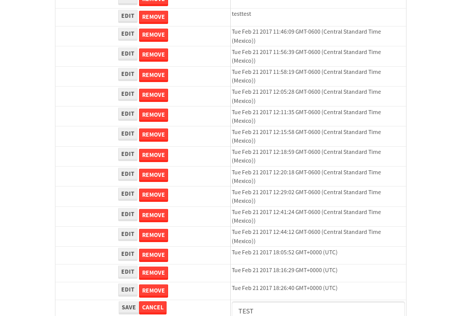

tbColumn.Grid Sorting - 26.447sTests: 5Skipped: 0Failures: 0 should sort data in ascending order then on descending order when sorting by Order Id column - 5.315sTests passed: 100.00%should order data in ascending order when click-sorting an unsorted text column - 4.961sTests passed: 100.00%should order data in descending order when click-sorting an ascending-sorted text column - 5.695sTests passed: 100.00%should order data in ascending order when click-sorting an unsorted date column - 5.274sTests passed: 100.00%should order data in descending order when click-sorting twice an unsorted date column - 5.201sTests passed: 100.00%
tbEmptyForm - 3.325sTests: 3Skipped: 0Failures: 2 should have an empty required field - 0.692sTests passed: 100.00%should not be able to click on save - 0.542sExpected null not to be null null.✗Tests passed: 50.00%should load default value for numeric field - 0.498sExpected '1' to be '5'.✗Tests passed: 0.00%
Tubular Filters.tbColumnFilter - 109.23sTests: 12Skipped: 0Failures: 0 should cancel filtering when clicking outside filter-popover - 9.047sTests passed: 100.00%should disable Value text-input for "None" filter - 7.35sTests passed: 100.00%should disable apply button for "None" filter - 6.944sTests passed: 100.00%should decorate popover button when showing data is being filtered for its column - 12.022sTests passed: 100.00%should correctly filter data for the "Equals" filtering option - 8.385sTests passed: 100.00%should correctly filter data for the "Not Equals" filtering option - 8.901sTests passed: 100.00%should correctly filter data for the "Contains" filtering option - 9.087sTests passed: 100.00%should correctly filter data for the "Not Contains" filtering option - 8.432sTests passed: 100.00%should correctly filter data for the "Starts With" filtering option - 6.936sTests passed: 100.00%should correctly filter data for the "Not Starts With" filtering option - 6.859sTests passed: 100.00%should correctly filter data for the "Ends With" filtering option - 6.949sTests passed: 100.00%should correctly filter data for the "Not Ends With" filtering option - 7.167sTests passed: 100.00%
Tubular Filters.tbColumnDateTimeFilter - 135.58sTests: 12Skipped: 0Failures: 0 should cancel filtering when clicking outside filter-popover - 7.309sTests passed: 100.00%should disable Value text-input for "None" filter - 6.564sTests passed: 100.00%should disable apply button for "None" filter - 6.789sTests passed: 100.00%should clear filtering when clicking on Clean button - 17.853sTests passed: 100.00%should decorate popover button when showing data is being filtered for its column - 12.038sTests passed: 100.00%should correctly filter data for the "Equals" filtering option - 6.859sTests passed: 100.00%should correctly filter data for the "Not Equals" filtering option - 6.825sTests passed: 100.00%should correctly filter data for the "Between" filtering option - 12.448sTests passed: 100.00%should correctly filter data for the "Greater-or-equal" filtering option - 12.149sTests passed: 100.00%should corretlly filter data for the "Greater" filtering option - 12.148sTests passed: 100.00%should correctly filter data for the "Less-or-equal" filtering option - 11.922sTests passed: 100.00%should correctly filter data for the "Less" filtering option - 11.989sTests passed: 100.00%
Tubular Filters.tbColumnOptionsFilter - 81.122sTests: 3Skipped: 0Failures: 0 should cancel filtering when clicking outside filter-popover - 8.824sTests passed: 100.00%should decorate popover button when showing data is being filtered for its column - 11.63sTests passed: 100.00%should filter column-elements in accordance to the selected filter when selecting a single option - 49.76sTests passed: 100.00%
Tubular Filters.tbTextSearch - 48.23sTests: 5Skipped: 0Failures: 0 min-chars is not set - 1.175sTests passed: 100.00%should filter data in searchable-column customer name to matching inputted text, starting from 3 characters - 6.888sTests passed: 100.00%should filter data in searchable-column shipper city to matching inputted text, starting from 3 characters - 11.931sTests passed: 100.00%should show clear button when there is inputted text only - 6.513sTests passed: 100.00%should clear filtering when clicking clear button - 16.271sTests passed: 100.00%
tbForm related components.tbCheckboxField - 6.102sTests: 2Skipped: 0Failures: 0 should save changes on "SAVE" - 2.754sTests passed: 100.00%should discard changes on "CANCEL" - 2.175sTests passed: 100.00%
tbForm related components.tbDropDownEditor - 11.575sTests: 5Skipped: 0Failures: 0 should set initial input value to the value of "value" attribute when defined - 1.778sTests passed: 100.00%should show the component name value in a label field when "showLabel" attribute is true - 1.707sTests passed: 100.00%should show a help field equal to this attribute, is present - 2.387sTests passed: 100.00%should submit modifications to item/server when clicking form "Save" - 3.094sTests passed: 100.00%should NOT submit modifications to item/server when clicking form "Cancel" - 2.096sTests passed: 100.00%
tbForm related components.tbTextArea - 16.285sTests: 7Skipped: 0Failures: 0 should set initial input value to the value of "value" attribute when defined - 1.941sTests passed: 100.00%should be invalidated when the number of chars is not in the range of "min" and "max" attributes - 2.185sTests passed: 100.00%should show the component name value in a label field when "showLabel" attribute is true - 1.932sTests passed: 100.00%should show a help field equal to this attribute, is present - 1.744sTests passed: 100.00%should require the field when the attribute "required" is true - 2.007sTests passed: 100.00%should submit modifications to item/server when clicking form "Save" - 2.932sTests passed: 100.00%should NOT submit modifications to item/server when clicking form "Cancel" - 2.453sTests passed: 100.00%
tbForm related components.tbDateEditor - 14.091sTests: 6Skipped: 0Failures: 0 should set initial date value to the value of "value" attribute when defined - 1.838sTests passed: 100.00%should be invalidated when the date is not in the range of "min" and "max" attributes - 2.555sTests passed: 100.00%should show the component name value in a label field when "showLabel" attribute is true - 1.683sTests passed: 100.00%should show a help field equal to this attribute, is present - 1.901sTests passed: 100.00%should submit modifications to item/server when clicking form "Save" - 2.717sTests passed: 100.00%should NOT submit modifications to item/server when clicking form "Cancel" - 2.632sTests passed: 100.00%
tbForm related components.tbTypeaheadEditor - 18.931sTests: 7Skipped: 0Failures: 0 should show an options list when there is an API-info/component entered-data - 2.212sTests passed: 100.00%should select the option clicked - 2.068sTests passed: 100.00%should show a "delete" button when an option/match is selected, and delete the option if button is clicked - 2.672sTests passed: 100.00%should show a label value equal to the component name when "showLabel" attribue is true - 1.891sTests passed: 100.00%should require a value when "require" attribute is true - 2.343sTests passed: 100.00%should submit modifications to item/server when clicking form "Save" - 3.245sTests passed: 100.00%should NOT submit modifications to item/server when clicking form "Cancel" - 3.347sTests passed: 100.00%
tbForm related components.tbSimpleEditor - 21.839sTests: 9Skipped: 0Failures: 0 should set initial input value to the value of "value" attribute when defined - 1.816sTests passed: 100.00%should be invalidated when the number of chars is not in the range of "min" and "max" attributes - 2.25sTests passed: 100.00%should show the component name value in a label field when "showLabel" attribute is true - 2.305sTests passed: 100.00%should set input placeholder to the value of "placeholder" attribute - 3.003sTests passed: 100.00%should validate the control using the "regex" attribute, if present - 1.908sTests passed: 100.00%should show a help field equal to this attribute, is present - 2sTests passed: 100.00%should require the field when the attribute "required" is true - 2.373sTests passed: 100.00%should submit modifications to item/server when clicking form "Save" - 3.239sTests passed: 100.00%should NOT submit modifications to item/server when clicking form "Cancel" - 2.193sTests passed: 100.00%
tbForm related components.tbNumericEditor - 18.1sTests: 7Skipped: 0Failures: 0 should set initial component value to the value of "value" attribute when defined - 2.086sTests passed: 100.00%should be invalidated when the entered number is not in the range of "min" and "max" attributes - 2.966sTests passed: 100.00%should show the component name value in a label field when "showLabel" attribute is true - 2.114sTests passed: 100.00%should show a help field equal to this attribute, is present - 1.918sTests passed: 100.00%should require the field when the attribute "required" is true - 2.688sTests passed: 100.00%should submit modifications to item/server when clicking form "Save" - 3.263sTests passed: 100.00%should NOT submit modifications to item/server when clicking form "Cancel" - 2.416sTests passed: 100.00%
tbForm Connection Error NoModelKey - 2.699sTests: 1Skipped: 0Failures: 0 tbForm connection error functionality - 0.454sTests passed: 100.00%
tbForm Connection Error NoServerUrl - 2.398sTests: 1Skipped: 0Failures: 0 tbForm connection error functionality - 0.565sTests passed: 100.00%
tbGridComponents - 50.463sTests: 6Skipped: 0Failures: 3 should add item with newRow method - 5.299sTests passed: 100.00%should add item with newRow method and cancel action - 1.024sTests passed: 100.00%should update item with tbSaveButton - 19.413sExpected '' to be 'TEST'.✗Tests passed: 0.00%should NOT update item on cancel Update action - 0.987sFailed: ElementNotVisibleError✗Tests passed: 0.00%should remove item with tbRemoveButton - 21.244sExpected 88 not to be 88, 'should remove the row from the table'.✗Tests passed: 50.00%should NOT remove item on cancel Remove action - 0.989sTests passed: 100.00%
tbGridPager.navigation buttons - 8.881sTests: 1Skipped: 0Failures: 0 should perform no action when clicking on the numbered navigation button corresponding to the current-showing results page - 1.388sTests passed: 100.00%
tbGridPager.navigation buttons.first/non-last results page related functionallity - 3.383sTests: 2Skipped: 0Failures: 0 should disable "first" and "previous" navigation buttons when in first results page - 1.609sTests passed: 100.00%should enable "last" and "next" navigation buttons when in a results page other than last - 1.774sTests passed: 100.00%
tbGridPager.navigation buttons.last/non-first results page related functionallity - 4.11sTests: 2Skipped: 0Failures: 0 should disable "last" and "next" navigation buttons when in last results page - 2.114sTests passed: 100.00%should enable "first" and "previous" navigation buttons when in a results page other than first - 1.996sTests passed: 100.00%
tbGridPager.page navigation - 7.303sTests: 5Skipped: 0Failures: 0 should go to next results page when clicking on next navigation button - 1.585sTests passed: 100.00%should go to previous results page when clicking on previous navigation button - 1.37sTests passed: 100.00%should go to last results page when clicking on last navigation button - 1.967sTests passed: 100.00%should go to first results page when clicking on first navigation button - 1.265sTests passed: 100.00%should go to corresponding results page when clicking on a numbered navigation button - 1.115sTests passed: 100.00%
tbGridPagerInfo - 4.301sTests: 2Skipped: 0Failures: 0 should show text in accordance to numbered of filter rows and current results-page - 1.341sTests passed: 100.00%should show count in footer - 0.567sTests passed: 100.00%
tbHttp - 16.221sTests: 8Skipped: 1Failures: 0 should be authenticated - 2.412sTests passed: 100.00%retrieve data - 2.234sTests passed: 100.00%should not login bad credentials - 2.164sTests passed: 100.00%should have a refresh token - 2.452sTests passed: 100.00%should remove authentication - 2.216sTests passed: 100.00%get method-Is not authenticated - 2.283sTests passed: 100.00%post method-Is not authenticated - 2.46sTests passed: 100.00%should regenerate access token on post - 0s***Skipped***Tests passed: 0%
tbPageSizeSelctor - 9.718sTests: 4Skipped: 0Failures: 0 should filter up to 10 data rows per page when selecting a page size of "10" - 2.052sTests passed: 100.00%should filter up to 20 data rows per page when selecting a page size of "20" - 1.531sTests passed: 100.00%should filter up to 50 data rows per page when selecting a page size of "50" - 2.792sTests passed: 100.00%should filter up to 100 data rows per page when selecting a page size of "100" - 1.878sTests passed: 100.00%
tbRowSelectable - 9.199sTests: 2Skipped: 0Failures: 0 selected rows - 4.826sTests passed: 100.00%unselected rows - 2.884sTests passed: 100.00%
tbSingleForm - 18.842sTests: 8Skipped: 1Failures: 0 should load correct info - 0s***Skipped***Tests passed: 0%should change customer name - 2.44sTests passed: 100.00%should save it - 2.692sTests passed: 100.00%should clear the inputs - 2.51sTests passed: 100.00%should update - 3.836sTests passed: 100.00%should reset editor - 2.429sTests passed: 100.00%should not save if not Changes - 2.608sTests passed: 100.00%should not be able to click on save - 2.326sTests passed: 100.00%


{kind=link}